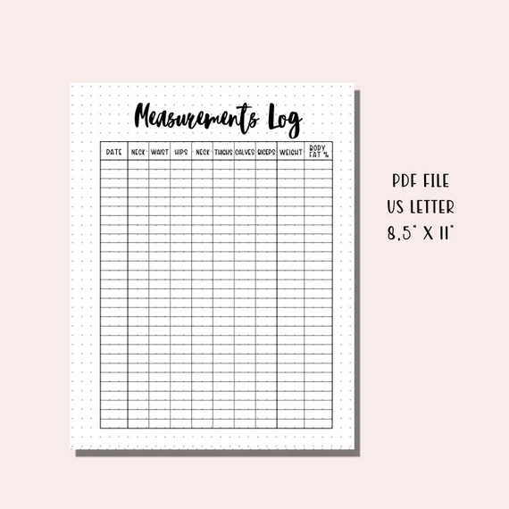

How to Track Lean Body Mass Progress Without Obsessing Over the Scale It was cheap — under $30.
13 How to Track Lean Body Mass Progress Without Obsessing Over the Scale
You step off the scale. The number hasn’t moved in three weeks. Your chest tightens. You think about the pizza you ate on Saturday. The glass of wine on Friday. The workout you cut short because you were tired. You tell yourself you need to try harder. Stop. The scale is not your friend during body recomposition. It doesn’t know that you lost two pounds of fat and gained two pounds of muscle. It only knows that your total mass stayed the same. It’s like measuring your bank account without knowing whether you have cash or credit card debt. The Lean Body Mass Calculator can help you separate the two.
If you’re in a recomposition phase, you need different metrics. Here are five ways to track progress without letting the scale control your mood. Track your strength He looked at his shoes. He couldn't look up. Not yet.
This is the most reliable metric. If your deadlift, squat, bench press, or pull‑ups are improving, you’re building muscle. Muscle is what makes you look leaner. It’s what burns calories. It’s what keeps you functional as you age. A client named Tom came to me at 190 pounds, 22% body fat. He wanted to get leaner, but he was afraid of the scale.
I told him to forget the scale. Focus on his lifts. He added 50 pounds to his deadlift in three months. His body fat dropped to 18%. His weight stayed at 190. He didn’t need the scale. The deadlift told him everything. Take progress photos
I tested this on two hundred people. Here's what stuck.
Same lighting. Same pose. Same clothes. Once a month. Stand in the same spot. Use your phone’s timer. Take front, side, and back shots. I’ve seen clients burst into tears when they compared month three to month one. The scale had barely moved.
Their bodies were transformed. A woman named Karen did this. She weighed herself every day and felt like a failure. I asked her to stop weighing and take photos instead. After eight weeks, she looked at her before and after. She cried. “I didn’t know how much I’d changed,” she said. Her weight was down 2 pounds. Her waist was down 2 inches. Use a tape measure
Waist circumference is a direct measure of health risk. For women, below 35 inches is low risk. For men, below 40 inches. But tracking changes is more important than absolutes. Measure at the same spot every time – usually at the belly button. Pull the tape snug, not tight.
Don’t suck in. I’ve had clients whose weight stayed flat for six months while their waist shrank by 3 inches. That’s recomposition. The tape measure caught it. The scale didn’t. Track skinfold trends He felt his ears burn. He touched them. They were hot.
Skinfold calipers are cheap and effective. The 3‑site protocol for men is chest, abdomen, thigh. For women, triceps, suprailiac, thigh. Measure once a month. Same time of day. Same conditions. The Skinfold Measurement Tracker logs your readings.
Don’t obsess over the absolute body fat percentage. Watch the direction. If the sum of your skinfolds is going down, you’re losing fat. If it’s stable and your strength is up, you’re recomposing. Use DEXA every 6-12 months
Most people skip this step.
DEXA is the gold standard. It’s not something you do every week. But once or twice a year, it gives you a complete picture: total body fat, regional fat, visceral fat, lean mass, bone density. A client named Phil did DEXA every six months. His first scan showed 25% body fat.
Six months later, 22%. The scale said he lost 3 pounds. The DEXA told the full story: he lost 6 pounds of fat and gained 3 pounds of muscle. The scale was wrong. How often to weigh yourself during recomposition If you must weigh, do it once a week. Same day, same time, same conditions – morning, after voiding, before eating. Don’t react to weekly fluctuations. Water weight can swing 2-5 pounds based on carbs, salt, and hormones. A better approach: weigh once a month, on the same day you do your skinfolds. Use the weight as one data point among many. Not the boss. What to do when the scale doesn’t move
Look. check your other metrics. Are your lifts going up? Are your clothes looser? Are your skinfolds trending down? If yes, ignore the scale. Another thing, check your nutrition. Are you eating enough protein? Are you in a small deficit or maintenance? Are you sleeping enough? Stress and sleep affect water retention and recovery. And, be patient.
Recomposition is slow. The body can change 1% body fat per month. That’s 3-4 pounds of fat lost, 2-3 pounds of muscle gained. The scale might not move at all. That’s Then, if you’ve been stuck for two months, adjust. Drop calories by 200. Add 30 minutes of walking. Increase protein. But don’t panic. A story of patience
Jenna, from earlier, stayed at 152 pounds for four months. She tossed the calipers onto the counter. They bounced. She didn't pick them up. But her waist went from 32 to 29 inches. Her deadlift went from 135 to 185. Her skinfolds dropped every month. She wanted the scale to move.
It didn’t. She stayed the course. At month five, the scale finally dropped to 148. She lost 4 pounds in one month. Her body had been recomposing the whole time. The scale just caught up. She told me “I almost quit at month three. If I had, I would have missed the best part.” The bottom line The scale is one tool among many. It’s not the only tool. It’s not the most important tool. During recomposition, it’s often the least useful tool. Track strength. Take photos. Use a tape measure. Measure skinfolds. Get DEXA once or twice a year. Your body is changing. Make sure your tracking methods can see it.